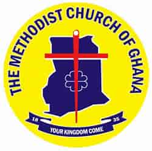
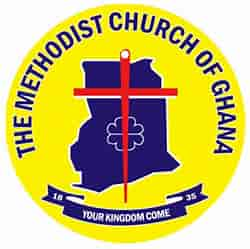
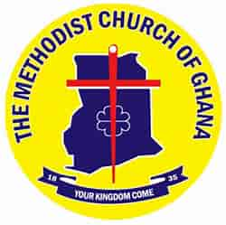
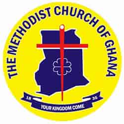
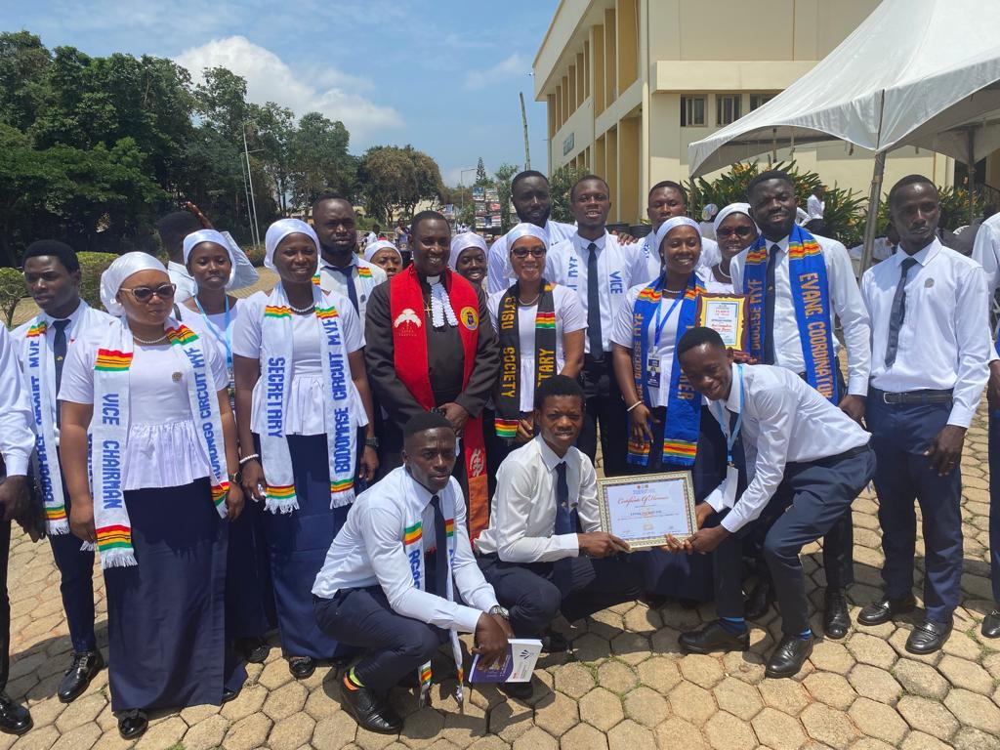
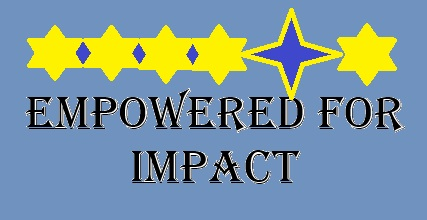

Dunell Methodist Youth Fellowship is a subset of Konongo Ciruit MYF. We are under Effiduase Diocese. Konongo Circuit has seven MYF Societies from which Dunwell is considered the second largest MYF in the Circuit.
Our Empowering organization is committed to fostering a Collaborative and Supportive community.
Join us for Innovative programs, Inspiring events, and Adventurous activities that will make you part of something truly special.
We are proud to be a Community-Focused and Enthusiastic organization, dedicated to making a positive impact in the lives of our members.
Come be a part of our Progressive and Educational journey. Together, let's build a Responsible and Motivating community, to help improve the Dunwell MYF, the Konongo Circuit MYF, Effiduase Diocese and Methodist Youth Development as a whole.
Main Account
Main Account Notes
*Empowered for Impact*
"I can do all things through Christ who strengthens me." - Philippians 4:13
President: Bro Dennis
Contact: (+233)249-499-640
Vice President: Sis. Hertty
Contact: (+233)550-050-903
Secretary: Bro. Effah Daniel
Contact: (+233)547-018-940
Financial Secretary: Sis. Afrakoma
Contact:
Organizer: Sis. Boaduwaa Mavis
Contact: (+233)553-695-947
Poter: Sis. Akos
Contact: (+233)554-665-114
Meeting Days: Every Sunday
Meeting Time: 6:30 PM - 7:30 PM
Place of Meetings: Church Premises
Download the program outline pdf
Total Members: 22
Total Number of Workers: 8
Total Number of Non-Workers: 14
ABOUT THE DEVELOPER
Benneth Amponsah is a member of Dunwell MYF.
He was the immeddiate past Financial Secretary.
He is a website developer and has developed many
website. He is the founder of Eyecon technologies (EyeconTECH).
Contact him on: +233-533-420-206